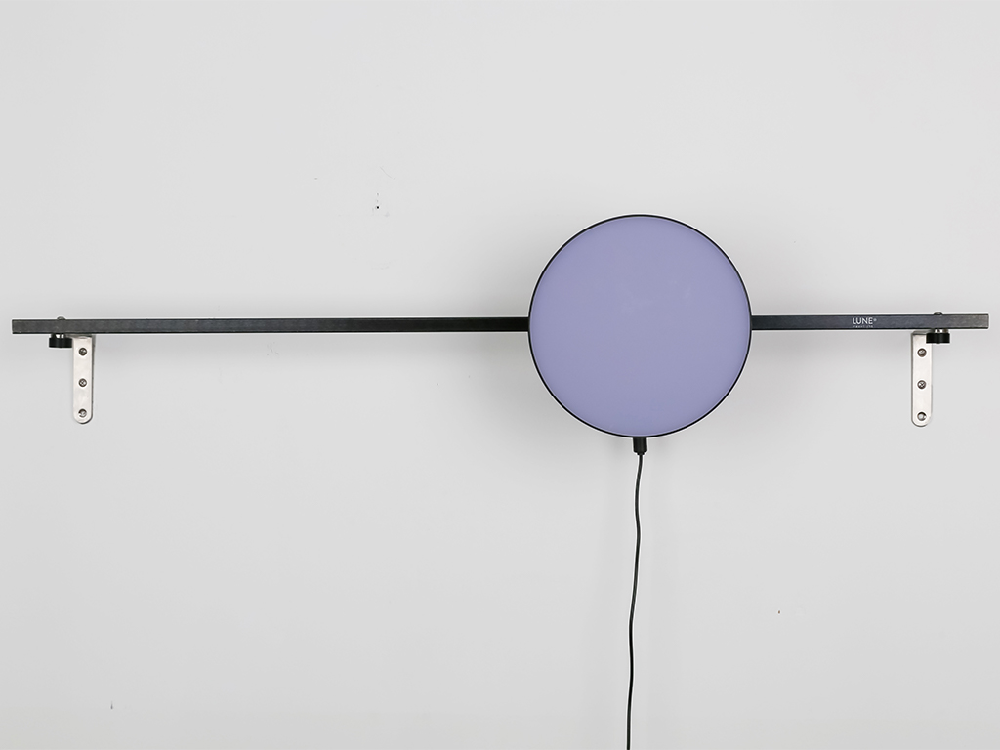

Publication: S. H. Lee, S. B. Kim, B. H. Kim, Hui Sung Lee, “LUNE: Representing Lunar Day by Displayed Lighting Object,” CHI EA '19 Extended
Abstracts of the 2019 CHI Conference on Human Factors in Computing Systems, Paper No. INT024, 20

LUNE® is a displayed lighting object representing time. It provides real-time lighting visualized moon phase. People can recognize the date of month through abstract image of moon. This product was developed to investigate the use of metaphor from lighting to represent time.